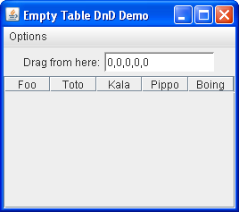

Lección: Arrastrar y Soltar y Transferencia de Datos
Soltado en una Tabla Vacía
Arrastrar y soltar dentro de una tabla vacía presenta un desafío único. Al seguir los pasos adecuados:
- Crear la tabla vacía.
-
Crear y enlazar un
TransferHandler. -
Habilitar la transferencia de datos llamando a
setDragEnabled(true). - Crear un panel de desplazamiento y agregar la tabla al panel de desplazamiento.
Ejecute la aplicación e intente arrastrar datos válidos dentro de la tabla pero esta no acepta la suelta. ¿Qué ocurre?
La razón es que la tabla vacía (al contrario que una lista o un árbol vacío) no ocupa ningún espacio en el
panel de desplazamiento. El componente JTable no se ajusta automáticamente para rellenar la
anchura de la ventana gráfica de un JScrollPane—sólo ocupa tanto espacio vertical como sea
necesario para las filas que contiene. Así, cuando usted arrastra el cursor sobre la tabla vacía, en realidad
no se encuentra sobre la tabla y el soltado falla.
Puede configurar la tabla para que permita el soltado en cualquier parte de la ventana gráfica llamando a
JTable.setFillsViewportHeight(boolean). El valor por defecto para esta propiedad es falso
para asegurar la compatibilidad con versiones anteriores.
El ejemplo siguiente, FillViewportHeightDemo, le permite experimentar con el soltado dentro de una
tabla vacía. La demostración contiene una tabla vacía con cinco columnas que tiene su modo de soltado
establecido para insertar filas y una fuente de arrastre que ofrece cinco valores delimitados por comas que se
autoincrementan.

Intente esto:
-
Pulse el botón Lanzar para ejecutar
FillViewportHeightDemousando Java™ Web Start ( descargue KDJ 7 o posterior). Alternativamente, para compilar y ejecutar el ejemplo por sí mismo, consulte el índice de ejemplos.
- Arrastre desde el campo de texto etiquetado "Drag from here" a la tabla.
- Suelte dentro de la tabla. La suelta es rechazada.
- Haga doble click sobre la fuente de arrastre. Esto deposita los valores actuales (0, 0, 0, 0, 0) en la tabla e incrementa los valores en el campo de texto.
- Una vez de nuevo, arrastre desde el campo de texto a la tabla. Puede insertar por encima o debajo de la fila, pero no en el área de abajo.
- Desde el menú Options, elija "Fill Viewport Height" para habilitar la propiedad "fillsViewportHeight".
- Desde el menú Options, elija "Reset" para vaciar la tabla.
- Arrastre desde el componente de texto a la tabla. Puede ahora soltar en cualquier parte de la ventana gráfica y se inserta el dato en la fila 0.
Puede examinar el fuente para
FillViewportHeightDemo.java, pero el punto principal para recordar es que generalmente debe
invocar setFillsViewportHeight(true) en cualquier tabla que acepte datos soltados.